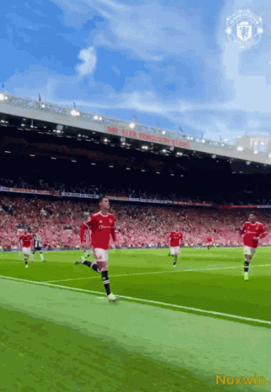

-
- Nome completo: Cristiano Ronaldo dos Santos Aveiro
- Data de nasc: 5 de fevereiro de 1985 (37 anos)
- Local de nasc: Funchal, Ilha da Madeira, Portugal
- Nacionalidade: português
- Altura: 1,87 m
- Pé: destro
- Apelido: CR7
- Robozão
- Cristiano Ronaldo dos Santos , 5 de fevereiro de 1985, é um futebolista português que atua como extremo-esquerdo ou ponta de lança. Atualmente joga pelo Manchester United e pela Seleção Portuguesa, onde é capitão. É o jogador com mais golos na história do futebol em jogos oficiais[12] e também é o jogador com mais golos na história a nível de seleções.
Ronaldo é frequentemente considerado o melhor e mais completo futebolista e artilheiro do mundo e na opinião da grande maioria dos especialistas do esporte, seus atributos físicos, suas habilidades goleadoras, sua mentalidade vencedora, sua liderança e seu desempenho sob pressão, o tornam um dos melhores futebolistas de todos os tempos,[16] com alguns ainda o colocando como o melhor jogador de sempre.
